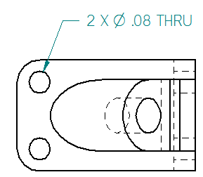
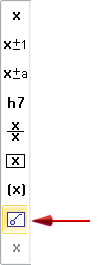
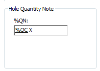
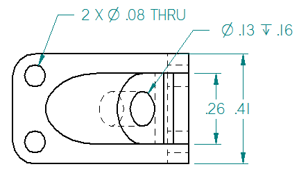

Place a feature callout dimension
You can place a feature callout dimension to extract a standard set of information based on the type of hole, slot, or threaded feature you select. When you place feature callout dimensions on holes added with the Hole command, you can include a quantity note to count the number of equivalent holes based on their type and other parameters in the Hole Options dialog box.

-
Select the Smart Dimension
 command.
command. -
On the Smart Dimension command bar, click Dimension Type, and then from the list select Feature Callout.

Note:The Feature Callout option causes the dimension to reference the predefined property text strings on the Feature Callout page of the Modify Dimension Style dialog box. These, in turn, reference the predefined information on the Smart Depth page. The hole, slot, or thread geometry that you select when you place the dimension determines which string is used to extract information.
To learn how to predefine the information that you are referencing, see Define smart hole properties in the Dimension style.
-
Locate the edge of a feature, so that the center point symbol is displayed, and then click to place the dimension.
In this feature callout dimension, the predefined properties for holes include a Hole Quantity Note (%QN) prefix definition on the Smart Depth tab (Dimension Style, Dimension Properties, Callout Properties) dialog box.

Alternatively, you can type one or more hole count property text codes (%QC, %QP, %QA, or % QD) directly into the Prefix box on the Dimension Prefix dialog box. For more information, see Add and edit dimension text.
To use the hole count codes with legacy draft files, you must force the drawing views to update using Ctrl+Shift+Update Views command.
The evaluated information is displayed only when the hole count quantity is greater than one, for example, %QC>1. For this reason, the second feature callout dimension does not include the hole count prefix.

How do I
Example: Dimension the length of a lineExample: Dimension the diameter of a circle
Dimension similarly sized holes
Example: Dimension a curved slot
Place concentric diameter dimensions
Place a 3D dimension on a pictorial drawing view
Define smart feature properties in the Dimension style
Look up more details
Smart Dimension commandSmart Dimension command bar